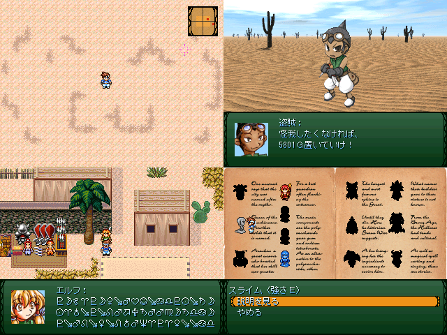

 |
|
| 作者：なつ4 | |
| ツクール：2000 | |
| 作者コメント： 拾ったアイテムを売って借金を返済します。 かなり前にエターなったプロジェクトを発見したので、 完成させようと思いましたが、原型留めていません。 テストプレイしたら約30分、初期レベル・初期装備でも クリアできてしまった「やりこまぬゲー」です。 |
|
| 管理人コメント： 初期状態クリアも充分やりこみの範疇な気もしますが果たして！？ |
|
| ダウンロード(4.16MB 09/21更新) / 感想掲示板 | |
| 前の作品 / 次の作品 / TOPへ戻る | |